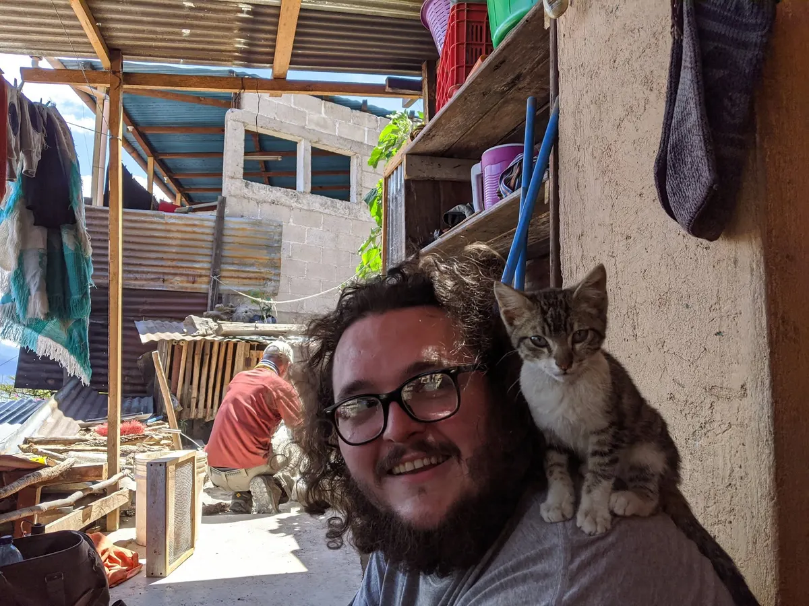

Lead improvement
Coordinate people, priorities, and stakeholders around a clear operational problem.
Operations, quality, and practical improvement
J. Wayne Graves Jr. is an operations and quality leader who identifies failure patterns, designs practical improvements, leads adoption, and uses evidence and reporting to make work more reliable.

What I bring
I connect leadership, quality governance, process design, enablement, and measurement so teams can act with more consistency.
Coordinate people, priorities, and stakeholders around a clear operational problem.
Classify recurring failure patterns and review root causes before choosing an intervention.
Turn dense guidance into decision support that fits the moment work actually happens.
Support people through the change, coordinate subject-matter review, and make the new path usable.
Choose a meaningful baseline and track whether an intervention is helping over time.
Present evidence and operational context so leaders can see what deserves attention.
Make responsibilities, decision points, and quality boundaries easier to follow.
Selected work
How can evidence, design, and governance make complex work more reliable?
Case Study 01 · Employment-based
A browser-side guided decision flow showing how recurring quality signals became a practical support intervention with enablement and measurement.
Read the case studyCase Study 02 · Self-directed portfolio
Verified Power BI governance-report views using synthetic genetics data, with visible publication decisions, data-quality lineage, definition stress tests, and KPI acceptance gates.
Read the case studyHow I work
Professional summary
I bring practical quality governance, process-improvement leadership, reporting, and browser-based workflow design to teams solving complex operational problems. Portfolio work provides a separate space to demonstrate self-directed reporting and data storytelling.